청소년상담사-1급(2교시) (2020-10-10 기출문제)
1과목: 비행상담
1. 에이커스(R. Akers)의 사회학습이론에서 비행행위를 설명하는 4가지 구성요소로 옳지 않은 것은?
- 차별적 접촉(differential association)
- 강화 기대(reinforcement expectation)
- 정의(definition)
- 차별적 강화(differential reinforcement)
- 모방(imitation)
(정답률: 알수없음)

2. 비행청소년에 관한 모피트(T. Moffitt)의 설명으로 옳은 것은?
- 비행의 중요한 원인은 어린 시절 형성된 자기통제력과 소속 집단 특정한 문화의 영향을 받는다.
- 청소년기 범죄자를 청소년기 한정형(adolescents limited type), 생애지속형(life course persistent type), 혼합형(mixed type)으로 구분하였다.
- 청소년기 한정형은 유치원 이전부터 청소년기까지 한정되어 비행하는 집단이다.
- 생애지속형의 비행은 '성숙의 차이' 때문에 발생한다.
- 청소년기 한정형은 사회모방을 통해 비행을 배운다.
(정답률: 알수없음)
3. 청소년의 공격적 행위에 관한 생물학적 설명으로 옳지 않은 것은?
- 높은 테스토스테론과의 관련성을 지지하는 연구가 있지만 추가적인 확인이 필요하다.
- 낮은 세라토닌 수준과의 관련성이 확인되었다.
- 노어에피네프린과의 관련성이 확인되었다.
- 전두엽과의 관련성이 확인되었다.
- 쌍생아, 입양아 연구를 통해 유전이 직접적인 원인임을 확인하였다.
(정답률: 알수없음)
4. 다음 사례에서 나타난 상담이론은?
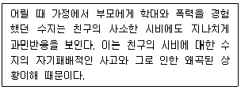
- 인지이론
- 정신분석이론
- 통제이론
- 지속이론
- 생애과정이론
(정답률: 알수없음)
5. 비행청소년 창민이는 지속적 주의력, 집중력, 단기기억에 어려움이 있다. 이를 확인하기 위해 참고해야할 웩슬러 검사(K-WAIS-IV)의 지표와 소검사의 연결로 옳은 것은?
- 지각추론 - 순서화, 토막짜기, 행렬추론
- 지각추론 - 빠진 곳 찾기, 무게비교, 퍼즐
- 작업기억 - 무게비교, 산수, 숫자
- 작업기억 - 산수, 숫자, 순서화
- 작업기억 - 무게비교, 숫자, 순서화
(정답률: 알수없음)
6. 비행청소년의 기질을 확인하기 위해 실시한 TCI 검사(Temperament and Character Inventory)에 관한 설명으로 옳지 않은 것은?
- 기질척도에는 자극추구, 위험회피, 사회적 민감성, 인내력이 있고 성격척도에는 자율성, 연대감, 자기초월이 있다.
- 자율성 및 연대감의 T점수가 45점 이상이면 성격이 동년배에 맞게 성숙함을 의미한다.
- 자극추구가 적고 위험회피 성향이 크고 사회적 민감성이 낮으면, '조심성이 많은 기질'을 의미한다.
- 자극추구가 크고 위험회피 성향이 적고 사회적 민감성이 낮으면, '모험적 기질'을 의미한다.
- 폭발성 기질은 신기한 자극에 대한 충동과 소심함에 의한 억제가 동시에 일어나므로 갈등이 많으며 타인의 감정에 덜 민감한 편이다.
(정답률: 알수없음)
7. MMPI 결과 4번과 9번 척도가 동반상승한 비행청소년의 특징으로 옳지 않은 것은?
- 자극을 추구하고 지루함과 좌절을 참지 못한다.
- 좋은 치료적 예후를 예상할 수 있다.
- 에너지가 넘치고 부주의하다.
- 과민하고 적대적이다.
- 사회적 기술이 좋고 대담하며 자신만만하다.
(정답률: 알수없음)
8. 청소년백서(2019)에 보고된 청소년 범죄 현황 및 대책으로 옳지 않은 것은?
- 전제 범죄자 중 청소년 범죄자가 차지하는 비율은 지난 10년 동안 3.6%∼5.1%로 나타났다.
- 청소년 범죄유형별 현황은 폭력범, 재산범, 교통사범의 순으로 높은 비율을 보이고 있어, 청소년 폭력에 대한 대책이 필요하다.
- 청소년 범죄자의 연령을 살펴보면, 18세가 가장 높고, 17세, 16세, 15세 순으로 높은 비율을 차지하고 있다.
- 전체 청소년 범죄인원은 지속적인 하락 추세인 반면, 여자 청소년 범죄비율은 2015년 이후 상승세를 보임에 따라 여자청소년 범죄에 대한 관심과 개입이 필요하다.
- 4범 이상의 청소년 범죄자의 비율은 2008년에 비해 약 2배로 증가하여 향후 재범률이 높은 청소년 범죄자에 대한 체계적인 교정교육과 지속적인 사후관리가 필요하다.
(정답률: 알수없음)
9. 다음에서 설명하는 개념은?
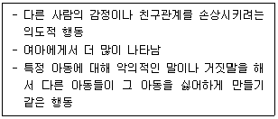
- 관계적 공격성
- 적대적 공격성
- 도구적 공격성
- 자기파괴적 공격성
- 반응적 공격성
(정답률: 알수없음)
10. 학교폭력예방 및 대책에 관한 법률상 '따돌림'의 정의에서 밑줄 친 부분이 옳은 것을 모두 고른 것은?
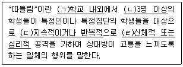
- ㄱ, ㄷ
- ㄴ, ㄹ
- ㄱ, ㄴ, ㄷ
- ㄱ, ㄷ, ㄹ
- ㄱ, ㄴ, ㄷ, ㄹ
(정답률: 알수없음)
11. DSM-5에서 정의한 품행장애 청소년이 보이는 제한된 친사회적 정서(limited prosocial emotion)로 옳지 않은 것은?
- 후회나 죄책감 결여
- 공동체 의식의 결여
- 냉담, 즉 공감의 결여
- 수행에 대한 무관심
- 피상적이거나 결여된 정서
(정답률: 알수없음)
12. 학자와 비행에 관한 심리학적 설명으로 옳은 것은?
- 에릭슨(E. Erickson): 초자아가 원초아를 통제함으로써 발생한다.
- 프로이드(S. Freud): 정체성 위기에서 경험하는 것이다.
- 아들러(A. Adler): 열등감 콤플렉스를 지나치게 보상하려는 시도이다.
- 스키너(B. Skinner): 부모가 자녀에게 원초아를 학습시키지 못할 때 나타난다.
- 아콘(K. Akon): 비행행동으로 인정과 보상을 받으려는 것이다.
(정답률: 알수없음)
13. 퀘이(H. Quay)와 그레이(H. Gray)의 행동체계이론에서 품행장애에 관한 설명으로 옳은 것을 모두 고른 것은?
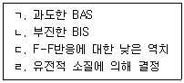
- ㄱ, ㄴ
- ㄷ, ㄹ
- ㄱ, ㄴ, ㄷ
- ㄴ, ㄷ, ㄹ
- ㄱ, ㄴ, ㄷ, ㄹ
(정답률: 알수없음)
14. 한국청소년상담복지개발원의 솔리언또래상담에 관한 설명으로 옳지 않은 것은?
- 또래상담자를 양성하는 프로그램이다.
- 초기 청소년 대상 프로그램의 목표 중 하나는 청소년폭력 조기 예방이다.
- Friendship, Counselorship, Citizenship을 기본정신으로 한다.
- 따돌림 당하는 친구에게 관심 갖기, 도움이 필요한 친구에게 문자ㆍ이메일 보내기 활동 등을 한다.
- 국내 초ㆍ중ㆍ고등학생은 물론 다문화ㆍ해외교포의 중ㆍ고등학생 대상으로 양성교육을 제공한다.
(정답률: 알수없음)
15. 소년법상 비행청소년의 진단 및 처분에 관한 설명으로 옳지 않은 것은?
- 소년법은 반사회성이 있는 소년의 환경 조정과 품행 교정을 위한 보호처분 등의 필요한 조치를 규정하였다.
- 소년부는 조사 또는 심리를 할 때에 정신건강의학과의사ㆍ심리학자ㆍ사회사업가ㆍ교육자나 그 밖의 전문가의 진단, 소년 분류심사원의 분류심사 결과와 의견, 보호관찰소의 조사결과와 의견 등을 고려하여야 한다.
- 소년에 대한 형사사건에 관하여는 소년법에 특별한 규정이 없으면 일반 형사사건의 예에 따른다.
- 형벌 법령에 저촉되는 행위를 한 10세 이상 14세 이하인 소년은 소년부의 보호사건으로 심리한다.
- 소년부 판사는 가정상황 등을 고려하여 필요하다고 판단되면 보호자에게 소년원ㆍ소년분류심사원 또는 보호관찰소 등에서 실시하는 소년의 보호를 위한 특별교육을 받을 것을 명할 수 있다.
(정답률: 알수없음)
16. 페라라(L. Ferrara)가 제안한 비행청소년의 집단상담에서 볼 수 있는 현상과 그에 대한 상담자의 대응으로 옳은 것을 모두 고른 것은?
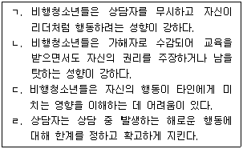
- ㄱ, ㄴ
- ㄴ, ㄹ
- ㄱ, ㄷ, ㄹ
- ㄴ, ㄷ, ㄹ
- ㄱ, ㄴ, ㄷ, ㄹ
(정답률: 알수없음)
17. 다음에서 설명하고 있는 비행청소년에 관한 증거기반 접근 프로그램은?
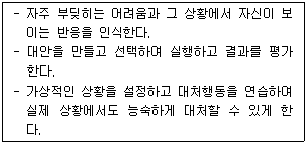
- 문제해결훈련
- 포커싱 치료
- 자각증진훈련
- 정서조절훈련
- 감수성훈련
(정답률: 알수없음)
18. 비행청소년을 위해 경찰이 주관하는 프로그램이나 제도를 모두 고른 것은?
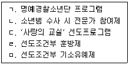
- ㄱ, ㄴ, ㄷ
- ㄴ, ㄹ, ㅁ
- ㄷ, ㄹ, ㅁ
- ㄴ, ㄷ, ㄹ
- ㄱ, ㄴ, ㄷ, ㄹ, ㅁ
(정답률: 알수없음)
19. 청소년복지 지원법상, 청소년복지지원기관 또는 청소년복지시설이 아니면 동일명칭을 사용할 수 없는 '동일명칭 사용금지'에 해당하는 것을 모두 고른 것은?
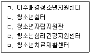
- ㄱ, ㄴ
- ㄷ, ㄹ
- ㄱ, ㄴ, ㄷ, ㅁ
- ㄴ, ㄷ, ㄹ, ㅁ
- ㄱ, ㄴ, ㄷ, ㄹ, ㅁ
(정답률: 알수없음)
20. 다음에서 설명하는 사이버불링(cyber bulling)의 유형은?
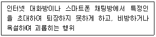
- 이미지불링
- 사이버감옥
- 플레이밍(flaming)
- 안티카페
- 사이버스토킹
(정답률: 알수없음)
21. 학교 밖 청소년 지원에 관한 법률상 학교 밖 청소년에 관한 내용으로 옳지 않은 것은?
- 초등학교와 중학교의 정규학교수업에 3개월 이상 결석하거나 취학의무를 유예한 청소년은 학교 밖 청소년에 해당된다.
- 국가와 지방자치단체는 경제교육, 법률교육, 문화교육 등 학교 밖 청소년의 자립에 필요한 교육을 지원할 수 있다.
- 교육부장관은 3년마다 학교 밖 청소년에 대한 실태조사를 실시하고, 그 결과를 공표하여야 한다.
- 학교 밖 청소년 지원 프로그램이란 학교 밖 청소년의 개인적 특성과 수요를 고려한 상담지원, 교육지원, 직업체험 및 취업지원, 자립지원 등의 프로그램을 말한다.
- 학교 밖 청소년 지원 위원회는 학교 밖 청소년 지원을 위한 법령 및 제도의 개선에 관한 사항을 심의한다.
(정답률: 알수없음)
22. 비행청소년을 상담할 때 상담자가 고려해야 할 사항으로 옳은 것을 모두 고른 것은?
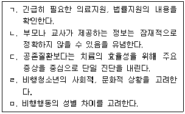
- ㄱ, ㄴ, ㄹ
- ㄱ, ㄷ, ㄹ
- ㄴ, ㄷ, ㅁ
- ㄱ, ㄴ, ㄹ, ㅁ
- ㄱ, ㄴ, ㄷ, ㄹ, ㅁ
(정답률: 알수없음)
23. 다음에서 상담자가 사용한 비행청소년 상담기법은?
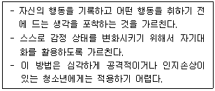
- 방어기제분석
- 생활양식분석
- 자기관찰훈련
- 행동조성
- 주장훈련
(정답률: 알수없음)
24. 학교폭력 예방 및 대책에 관한 법률의 내용으로 옳은 것은?
- 학교란 유치원, 초등학교, 중학교, 고등학교만을 말한다.
- 학교폭력이란 학교 내에서 학생과 교사를 대상으로 한 신체, 정신, 재산상의 피해를 수반하는 행위이다.
- 피해학생의 보호를 위해 심리상담, 일시보호, 사회봉사 등의 필요한 조치를 취할 수 있다.
- 가해학생이 특별교육을 이수할 경우 해당 학생의 보호자도 함께 교육을 받게 하여야 한다.
- 학교폭력관련 업무에서 가해학생의 성명은 비밀누설금지 예외사항에 해당한다.
(정답률: 알수없음)
25. 다음에서 상담자가 사용한 비행상담 접근법은?
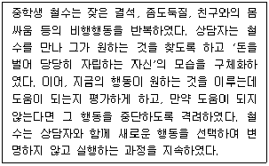
- 인간중심 접근
- 현실주의 접근
- 실존주의 접근
- 미세환경 접근
- 구성주의 접근
(정답률: 알수없음)
2과목: 성상담
26. 강간/강간미수 피해 사건 발생 직후 피해자가 할 일로서 옳지 않은 것은?
- 경찰이나 학교에 신고한다.
- 안전한 장소에 혼자 머무른다.
- 몸에 상처가 났을 경우 사진을 찍어 놓는다.
- 증거물이 훼손되지 않도록 종이봉투에 싸서 보존한다.
- 몸을 씻지 않은 채 빨리 산부인과에 간다.
(정답률: 알수없음)
27. 캐스(V. Cass)가 제시한 동성애 성정체성 발달과정을 순서대로 바르게 나열한 것은?
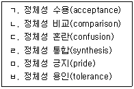
- ㄱ - ㄴ - ㅂ - ㅁ - ㄷ - ㄹ
- ㄷ - ㄴ - ㅂ - ㄱ - ㅁ - ㄹ
- ㄷ - ㅂ - ㄴ - ㄱ - ㄹ - ㅁ
- ㄹ - ㄷ - ㅂ - ㄴ - ㄱ - ㅁ
- ㄹ - ㅁ - ㄴ - ㅂ - ㄷ - ㄱ
(정답률: 알수없음)
28. 성 상담자의 윤리적 태도와 행동으로 옳은 것은?
- 내담자 스스로 성 가치관을 명료화하도록 돕는다.
- 내담자가 상담자의 성 가치관을 따르도록 제안한다.
- 내담자가 지닌 성 가치관의 건전성을 명확하게 평가한다.
- 상담자 자신의 성 가치관과 신념까지 명료화할 필요는 없다.
- 바람직한 성행동의 기준은 문화에 따라 차이가 없음을 인식한다.
(정답률: 알수없음)
29. 성 소수자에 관한 용어와 그 의미의 연결로 옳지 않은 것은?
- 이반: 다양한 성 소수자를 통칭하는 표현
- 쉬메일(she-male): 남성의 성기를 그대로 둔 가슴 성형수술 여성
- 퀴어: 성 소수자를 통칭하며 성 소수자의 정체성과 자부심을 드러냄
- 크로스 드레서: 반대성의 외모나 복장을 착용하는 것에 만족감이나 편안함을 느끼는 사람
- 아웃팅: 외부에 자신의 성정체성을 스스로 밝히는 것
(정답률: 알수없음)
30. 성폭력 피해 남성생존자를 상담하는 상담자의 태도와 행동으로 옳지 않은 것은?
- 동성애 공포반응을 이해하고 공감한다.
- 자신의 남성성을 의문시할 수 있음을 수용한다.
- 자신만이 유일한 남성 피해자가 아님을 알려준다.
- 자신이 가해자로 변할 것에 대한 두려움을 수용한다.
- 사건 현장에서 저항할 수 있는 힘이 있었음을 알려준다.
(정답률: 알수없음)
31. 성역할 위계이론에 해당하는 것을 모두 고른 것은?
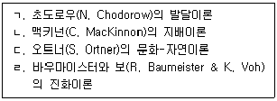
- ㄱ, ㄴ
- ㄷ, ㄹ
- ㄱ, ㄴ, ㄷ
- ㄴ, ㄷ, ㄹ
- ㄱ, ㄴ, ㄷ, ㄹ
(정답률: 알수없음)
32. 성학대 및 성폭력 예방과 대응을 위한 부모 역할로 옳지 않은 것은?
- 성인은 누구나 잠재적 가해자임을 주지시킨다.
- 평소 자녀의 말을 진지하게 받아들인다.
- "아니오"라고 말할 수 있는 자녀의 권리를 존중한다.
- 성학대의 의미를 구체적으로 알려준다.
- 자녀가 부모에게 비밀을 편안하게 말할 수 있도록 돕는다.
(정답률: 알수없음)
33. 성 소수자를 상담할 때 상담자가 갖추어야 할 자질과 행동으로 옳지 않은 것은?
- 성 소수자에 대한 법과 제도의 변화 경향을 숙지한다.
- 성적 지향의 종류와 특징에 대한 연구결과들을 숙지한다.
- 역사에 따라 성 소수자 차별에 변화가 있음을 이해한다.
- 효과적이라고 입증된 전환치료방법을 습득하여 실시한다.
- 차별로 인한 성 소수자의 심리적 고통과 일탈행동 발생과정을 이해한다.
(정답률: 알수없음)
34. 성매매 피해 청소년을 상담할 때 유의해야 할 사항으로 옳은 것을 모두 고른 것은?
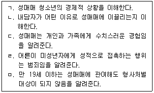
- ㄱ, ㅁ
- ㄴ, ㄹ
- ㄷ, ㅁ
- ㄱ, ㄴ, ㄹ
- ㄴ, ㄷ, ㅁ
(정답률: 알수없음)
35. 친족에 의한 근친 성학대 피해 청소년의 상담방법으로 옳은 것을 모두 고른 것은?
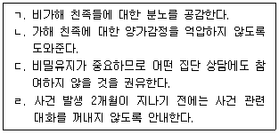
- ㄱ, ㄴ
- ㄴ, ㄷ
- ㄱ, ㄴ, ㄷ
- ㄴ, ㄷ, ㄹ
- ㄱ, ㄴ, ㄷ, ㄹ
(정답률: 알수없음)
36. 청소년에게 상담자가 제공한 피임관련 정보로 옳은 것은?
- 콘돔은 남성용 피임기구이며 여성용 콘돔은 개발되어 있지 않다.
- 먹는 피임약은 매주 1회 복용함으로써 난자생성 호르몬 분비를 촉진하는 방법이다.
- 살정제는 성교 24시간 전에 질에 삽입하여 정충을 죽이는 방법이다.
- 사후 피임약은 성교 후 72시간 내에 복용하여 배란억제, 정자이동방해, 착상방해를 유도하는 방법이다.
- 기초체온법은 체온이 낮아지는 기간 동안에 성관계를 함으로써 임신을 피하는 방법이다.
(정답률: 알수없음)
37. 포르노에 오랫동안 노출된 결과로 옳지 않은 것은?
- 성평등 의식 약화
- 성폭력에 대한 관용 증가
- 결혼의 가치에 대한 확신 유발
- 파트너의 성적 수행에 대한 불만 강화
- 남녀간 정서적 유대관계에 대한 관심 감소
(정답률: 알수없음)
38. 사춘기 여자 청소년의 유방 발달과 관리에 관한 설명으로 옳지 않은 것은?
- 사춘기가 시작되면 젖멍울이 생기고 유륜이 진해진다.
- 양쪽 유방의 크기와 모양이 정확히 일치하지 않는 경우가 대부분이다.
- 유두 함몰은 수유 문제로 이어지는 이상 발달이다.
- 운동이나 마사지로 유방의 모양을 변화시킬 수 없다.
- 월경 주기에 따라 유방 자가검진을 하기 좋은 시기가 있다.
(정답률: 알수없음)
39. 남녀 생식기에 관한 설명으로 옳은 것을 모두 고른 것은?
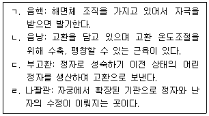
- ㄱ, ㄴ
- ㄴ, ㄷ
- ㄱ, ㄴ, ㄹ
- ㄱ, ㄷ, ㄹ
- ㄱ, ㄴ, ㄷ, ㄹ
(정답률: 알수없음)
40. 포경수술에 관한 설명으로 옳은 것은?
- 포경은 자연스러운 것으로 제거수술이 필요한 경우는 없다.
- 수술을 하면 성 접촉에 의한 감염을 예방하는 데 유리하다.
- 사춘기 때와 달리, 출생 직후에 하는 수술에는 부작용이 없다.
- 통과의례의 의미가 있어, 남자로서의 정체성 발달을 위해 필요하다.
- 과거 종교적 의미로 시행되기도 했으나 현재 그러한 문화는 없다.
(정답률: 알수없음)
41. 성행동과 성태도에서의 성차에 관한 설명으로 옳은 것은?
- 성적 환상이 여자보다 남자에게 더 많은 것은 남자의 리비도가 여자보다 강하기 때문이다.
- 성적 자극에 대한 반응 양식에 성차가 있다.
- 포르노 사용에 대한 청소년기의 성차는 성인기에는 사라진다.
- 청소년기에는 남자가 자위행위를 더 많이 하지만 성인기에는 반대가 된다.
- 성적 환상의 내용에서는 성차가 없다.
(정답률: 알수없음)
42. 청소년의 성문화에 관한 설명으로 옳지 않은 것은?
- 상업적 포르노가 아니라 일반 청소년의 실제 영상을 접할 기회가 많아졌다.
- 소셜 네트워크 서비스(SNS)를 통한 사생활 침해가 늘고 있다.
- 대중문화는 여자아이들에게 날씬하고 섹시해야 한다는 메시지를 전달한다.
- '훈남' 문화는 남자아이들에게 자기 약함을 드러내야 한다는 메시지를 전달한다.
- '커플 앱'에 접근해서 이용하는 청소년들이 있다.
(정답률: 알수없음)
43. 성 연구자와 그 설명으로 옳은 것은?
- 엘리스(H. Ellis): 사례연구를 바탕으로 청소년 자위행위가 도덕적 일탈을 낳는다고 주장함
- 킨제이(A. Kinsey): 남자 동성애에 대해 최초의 체계적 조사연구를 했으나 여성의 성에 대한 연구는 없음
- 마스터스와 존슨(W. Masters & V. Johnson): 마스터스의 환자를 대상으로 한 연구에서 성반응 주기 모델을 개발하였음
- 캐플란(H. Kaplan): <새로운 성 치료>라는 책에서 아동기 성폭력 피해에 대한 치료 모델을 제시하였음
- 버스(D. Buss): 성 행동과 태도의 성차를 성 전략이론으로 설명하였음
(정답률: 알수없음)
44. 다음에서 설명하는 성적 지향 발달모델은?
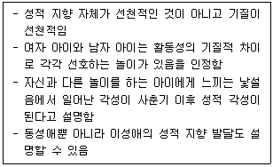
- 벰(D. Bem)의 EBE 모델
- 킨제이(A. Kinsey)의 동성애 발달 모델
- 스톰즈(M. Storms)의 이성 성욕-동성 성욕 모델
- 르베이(S. LeVay)의 시상하부 남성화 모델
- 프로이트(S. Freud)의 병적 동성애 발달 모델
(정답률: 알수없음)
45. 성역할 발달에 관한 이론별 설명으로 옳지 않은 것은?
- 성도식이론: 발달단계에 따라 문화보편적인 성 도식이 발달함
- 진화이론: 남녀의 성역할이 생물학적 적응을 위해 발달함
- 사회학습이론: 성역할도 다른 행동의 학습과 동일한 원리로 학습됨
- 인지발달이론: 성별을 인식하는 인지능력이 발달하면 그에 어울리는 행동을 하려고 함
- 정신분석이론: 동성 부모와 동일시해서 성역할이 발달함
(정답률: 알수없음)
46. 생물학적 성에 관한 설명으로 옳지 않은 것은?
- 난자는 X-염색체, 정자는 X-염색체 또는 Y-염색체를 가짐
- 배아의 생식기가 난소가 될지 정소가 될지를 결정하는 것은 성호르몬임
- 태내에서 고환은 안드로겐, 난소는 에스트로겐을 분비함
- Y-염색체가 있으면 X-염색체가 둘 이상이어도 해부학적으로 남성임
- 성호르몬은 남녀의 성발달 과제에 맞도록 뇌를 발달시킴
(정답률: 알수없음)
47. 사이버 성폭력에 관한 설명으로 옳지 않은 것은?
- 사귀던 때에 주고받은 성적 동영상을 협박도구로 이용하는 사례가 있다.
- 연인과 이메일이나 스마트폰 비밀번호를 공유하는 것은 사이버 폭력의 희생자가 될 확률을 높인다.
- 사이버 폭력은 대응할수록 더 불리한 기록을 남길 수 있으므로 무시하는 것이 가장 좋은 방법이다.
- 상대방의 스마트폰 요금을 내고 있더라도 그 스마트폰에 저장된 내용을 사용할 권리를 갖는 것은 아니다.
- 당사자가 모르더라도 부적절한 사진이 유포되었다면 사이버성폭력에 해당한다.
(정답률: 알수없음)
48. 월경에 관한 설명으로 옳은 것은?
- 젖멍울, 음모 발달에 이어 초경이 시작된다.
- 월경혈은 자궁내막과 질벽이 떨어져 나오는 혈액이다.
- 에스트로겐 분비량의 개인차로 월경주기가 결정된다.
- 청소년기에는 질이 충분히 성숙하지 않아 탐폰을 사용할 수 없다.
- 월경통은 자궁수축에서 오는 것으로 심리적 영향은 없다.
(정답률: 알수없음)
49. 청소년이 이성교제 상대에게 느끼는 매력에 관한 설명으로 옳지 않은 것은?
- 물리적으로 가까워서 반복 노출 기회가 많을수록 매력을 느낄 가능성이 높아진다.
- 서로 유사성이 낮을수록 매력을 느낄 가능성이 높아진다.
- 남녀 모두 잘생긴 외모를 가진 상대에게 매력도가 높아진다.
- 생리학적 흥분 상태에서 만난 상대에게 매력을 느낄 가능성이 높아진다.
- 서로 주고받는 것이 상호적일수록 매력을 유지할 가능성이 높아진다.
(정답률: 알수없음)
50. 청소년 성교육의 목표를 모두 고른 것은?
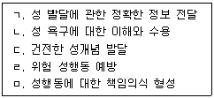
- ㄱ, ㅁ
- ㄴ, ㄷ
- ㄱ, ㄷ, ㄹ
- ㄴ, ㄹ, ㅁ
- ㄱ, ㄴ, ㄷ, ㄹ, ㅁ
(정답률: 알수없음)
3과목: 약물상담
51. 청소년의 알코올 남용 위험요인으로 옳은 것을 모두 고른 것은?
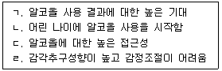
- ㄱ, ㄷ
- ㄷ, ㄹ
- ㄱ, ㄷ, ㄹ
- ㄴ, ㄷ, ㄹ
- ㄱ, ㄴ, ㄷ, ㄹ
(정답률: 알수없음)
52. 우리나라 마약중독의 실태에 관한 내용으로 옳지 않은 것은?
- 대마, 향정신성 의약품, 마약 중 대마 관련 검거율이 가장 높다.
- 2015년에 마약류 사범이 연간 1만 명을 넘은 후, 1만 명 이하로 떨어지지 않고 있다.
- 최근 합성대마, 야바 등의 신종마약류가 늘어나고 있다.
- 2019년의 마약사범 구성은 투약, 밀매, 소지 순이었다.
- 최근 다크웹, SNS 등을 통해 해외 마약류 구입사례가 증가하고 있다.
(정답률: 알수없음)
53. DSM-5의 물질사용장애 진단기준에 해당하지 않는 것은?
- 의도했던 것보다 더 많은 양을 사용하는 조절능력 손상이 나타난다.
- 동일한 효과를 얻기 위해 이전보다 더 많은 물질을 사용한다.
- 반복적인 물질의 사용으로 법적 문제가 발생한다.
- 물질사용에 대한 갈망감이 일어난다.
- 물질사용으로 직장, 학교, 가정에서 책임을 수행하지 못한다.
(정답률: 알수없음)
54. 청소년 약물사용 모델과 설명이 올바르게 연결된 것은?
- 선택적 상호작용 이론: 약물에 대한 주위의 우호적인 태도가 약물남용을 증가시킨다.
- 상황일치 가설: 상황보다 개인의 약물에 대한 태도가 중요하다.
- 합리적 선택 이론: 비행친구로 인해 약물을 남용한다.
- 사회적 능력 모델: 사회적 기술능력의 부족 때문에 약물을 남용한다.
- 사회적 무능력 모델: 약물사용이 선행하며 그로 인해 비행친구가 생긴다.
(정답률: 알수없음)
55. 약물사용자에 대한 인지행동치료 방법에 해당하지 않는 것은?
- 갈망감을 대처하기 위한 인지적, 행동적 전략들을 구상한다.
- 약물 사용으로 인한 비용과 혜택을 분석한다.
- 약물 사용을 줄일 수 있는 구체적인 계획을 수립한다.
- 소크라테스식 대화로 약물사용을 유지시키는 신념을 탐색한다.
- 변화단계모델을 사용하여 자신의 현재 단계를 파악한다.
(정답률: 알수없음)
56. 동기강화상담의 OARS 기술에 관한 설명으로 옳은 것은?
- 반영하기에는 축소반영, 확대반영, 양면반영 등이 포함된다.
- 기계적인 인정하기는 라포형성에 도움이 된다.
- 열린질문은 내담자에게 단답형으로 대답할 수 있도록 한다.
- 내담자의 말 중에 변화에 대한 의지가 담긴 것만을 반영한다.
- 요약하기에는 단순요약, 복합요약, 전환요약 유형이 있다.
(정답률: 알수없음)
57. 의약품 오ㆍ남용에 관한 설명으로 옳은 것을 모두 고른 것은?
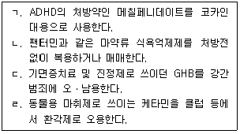
- ㄱ, ㄷ
- ㄴ, ㄹ
- ㄱ, ㄴ, ㄷ
- ㄴ, ㄷ, ㄹ
- ㄱ, ㄴ, ㄷ, ㄹ
(정답률: 알수없음)
58. 약물 사용 청소년을 상담하는 상담자의 바람직한 태도 및 자질에 해당하지 않는 것은?
- 재발 위험요인 분석은 약물사용을 자극할 수 있으므로 지양한다.
- 약물사용 실수와 재발을 구분할 줄 알아야 한다.
- 약물 사용에 대한 도덕적 가치판단에 융통성이 있어야 한다.
- 청소년이 약물 대신 상담자에게 의존하지 않도록 한다.
- 약물에 대한 전문적인 지식을 쌓아야 한다.
(정답률: 알수없음)
59. 니코틴 중독 및 대체치료에 관한 설명으로 옳지 않은 것은?
- 니코틴 중독은 실생활에서 조건화된 내성을 발생시킬 가능성이 높다.
- 니코틴 껌은 딸꾹질, 속쓰림 등의 부작용이 있으므로 빠르게 씹어야 한다.
- 니코틴 패치는 국부적인 염증이나 가벼운 소화 장애를 일으킬 수 있다.
- 니코틴 껌을 권할 때는 턱관절 질환과 구강문제를 확인해야 한다.
- 니코틴 의존도를 점검하고 흡연환경을 파악해야 한다.
(정답률: 알수없음)
60. 다음은 어떤 약물에 관한 설명인가?
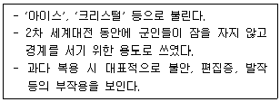
- 대마오일
- 메스암페타민
- 디아제팜
- 졸피뎀
- 프로포폴
(정답률: 알수없음)
61. 다음에서 설명하는 개념은?
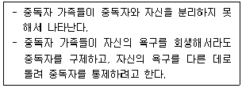
- 공동의존
- 공존장애
- 교차중독
- 하위체계
- 과정중독
(정답률: 알수없음)
62. 대마 사용에 관한 설명으로 옳은 것을 모두 고른 것은?
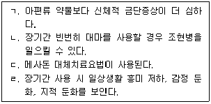
- ㄱ, ㄷ
- ㄴ, ㄹ
- ㄱ, ㄴ, ㄷ
- ㄴ, ㄷ, ㄹ
- ㄱ, ㄴ, ㄷ, ㄹ
(정답률: 알수없음)
63. 약물과 약리적 분류가 옳게 연결된 것은?
- 알코올 - 중추신경 흥분제
- LSD와 대마 - 중추신경 억제제
- 메스암페타민 - 환각제
- 코카인 - 중추신경 흥분제
- 헤로인과 아편 - 환각제
(정답률: 알수없음)
64. 약물과 오ㆍ남용으로 인한 합병증의 연결로 옳은 것을 모두 고른 것은?
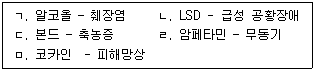
- ㄱ, ㄴ
- ㄱ, ㄹ
- ㄴ, ㄷ, ㄹ
- ㄴ, ㄷ, ㅁ
- ㄱ, ㄴ, ㄷ, ㅁ
(정답률: 알수없음)
65. 청소년 약물중독에 관한 설명으로 옳은 것은?
- 청소년은 성인에 비해 중독과정의 속도가 느리다.
- 약물의 효과가 배로 경험되는 금단증상을 시소원칙이라 한다.
- 흡입제의 남용징후는 구토, 어눌한 말, 근육 협응의 불안정 등이다.
- 중독은 재발이 없고 완치가 가능한 질환이다.
- 갈망은 계속 새로운 약물만을 사용하고자 하는 욕망을 말한다.
(정답률: 알수없음)
66. 청소년 약물문제의 정책 및 제도에 관한 설명으로 옳은 것은?
- 법무부는 형벌과 처벌보다는 교육과 보호를 강조하며 Wee프로젝트를 실시한다.
- 여성가족부는 청소년상담복지개발원을 비롯해 상담실 및 쉼터를 운영ㆍ지원한다.
- 마약퇴치운동본부는 약물사용에 관한 실천적 활동을 전개하며 법무부에서 운영한다.
- 대마관리법에 따르면 대마의 보관을 제외하고 운반, 밀매, 사용 모두 법의 제제를 받는다.
- 문화체육관광부는 조건부기소유예처분 등의 경우 청소년 전문치료기관에서 판별검사를 받도록 지원한다.
(정답률: 알수없음)
67. 중독의 12단계 치료 모델에 관한 설명으로 옳지 않은 것은?
- 1단계는 '우리는 알코올에 무력했으며 우리의 삶을 수습할 수 없게 되었다는 것을 시인했다' 이다.
- Al-Anon은 중독자의 자녀들을 위한 모임이다.
- 완벽함이 아니라 과정에서의 지속적인 발전을 강조한다.
- 목표는 수용과 항복을 시작으로 변화를 이루는 것이다.
- 자신의 의지보다 더 강한 힘의 존재에 대한 믿음을 강조한다.
(정답률: 알수없음)
68. 중독상담자의 윤리적인 문제와 관련된 내용으로 옳지 않은 것은?
- 내담자가 자신이나 타인에게 해를 가할 수 있는 경우 비밀보장에 대한 예외 상황이 된다.
- 내담자가 수퍼바이저의 자녀인 경우 이중관계에 해당 된다.
- 다양한 개입을 위해 중독상담자는 전문성을 유지해야 한다.
- 상담자는 평가결과와 해석을 오용해서는 안 된다.
- 다른 상담자의 윤리위반에 대해 비밀을 지킨다.
(정답률: 알수없음)
69. 청소년 약물남용 2차 예방활동으로 옳은 것은?
- 소년약물법원 대체프로그램
- 치료공동체 개입
- 고위험 청소년에 대한 조기선별
- 약물남용 예방교육
- 남용되는 약물의 구입에 대한 법적 제재의 강화
(정답률: 알수없음)
70. 중독상담 시 고려해야 할 사항으로 옳지 않은 것은?
- 중독은 장기간 관리 시스템이 필요하다.
- 중독자의 가족들을 위한 상담 및 교육이 필요하다.
- 청소년 중독의 경우 부모상담을 생략하는 것이 효과적이다.
- 중독을 대신할 대안 프로그램이 필요하다.
- 가족 스스로 장기간의 지지역량을 갖추도록 돕는다.
(정답률: 알수없음)
71. 약물사용 청소년의 치료 및 재활에 관한 설명으로 옳지 않은 것은?
- 치료목표를 비판단적이고 협력적인 방법으로 설정한다.
- 내담자가 잘하고 있을 때 긍정적인 피드백을 주고 자기 효능감을 고무시킨다.
- 친구가 많으면 약물을 사용하지 않으므로 내담자의 친구관계에는 개입하지 않는다.
- 약물 없이도 즐길 수 있는 활동을 계획하고 활동 후 경험을 나눈다.
- 보호요인을 강화하고 위험요인을 감소시킨다.
(정답률: 알수없음)
72. 약물중독 관련 평가 도구에 관한 설명으로 옳지 않은 것은?
- AUDIT는 세계보건기구에서 개발한 알코올 사용 선별도구이다.
- CAGE는 음주문제를 간편하게 선별하는 자기보고 도구이다.
- MMPI-2의 AAS는 약물의 사용 및 남용과 관련이 있는 13개 문항으로 구성되어 있다.
- NAST-I는 니코틴의존 선별도구이다.
- POSIT는 청소년 약물남용선별검사이다.
(정답률: 알수없음)
73. 다음 설명에 해당되는 치료적 접근은?
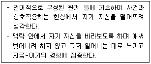
- 인지행동 치료
- 동기강화상담
- 현실치료
- 수용전념치료
- 해결중심단기치료
(정답률: 알수없음)
74. 약물 사용 청소년 집단상담의 규칙으로 옳지 않은 것은?
- 시간을 엄수한다.
- 약물사용을 부추기는 옷차림이나 발언을 하지 않는다.
- 경청, 눈맞춤, 발언 전 허락구하기 등으로 타인을 존중한다.
- 집단상담 진행 중 집단을 그만두는 것은 불가능하다.
- 다른 구성원에게 물리적 폭력을 사용해서는 안 된다.
(정답률: 알수없음)
75. 중독자 가족에서 흔히 발견되는 가족 규칙과 상담에 관한 설명으로 옳은 것은?
- 가족체계가 견딜 수 있는 행동범위를 가지며 가족 모두의 건강한 욕구가 반영된다.
- 가족규칙이 현재 중심적이고 생산적이다.
- 말하지 않기, 믿지 않기, 느끼지 않기와 같은 규칙이 있다.
- 중독자 가족의 암묵적 규칙을 탐색하지 않아야 효과적인 상담을 할 수 있다.
- 중독자가 자신의 중독 행동에 대한 책임을 지게 하는 가족 규칙이 작동한다.
(정답률: 알수없음)
4과목: 위기상담
76. 다음에서 설명하는 외상치료 기법은?
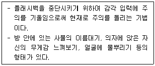
- 그라운딩
- 체계적 둔감화
- 지속노출치료
- 긍정화
- 감정프로세싱
(정답률: 알수없음)
77. 학생 전체를 대상으로 실시되는 보편적인 자살예방 교육내용으로 옳지 않은 것은?
- 자살위험 평가도구 및 스크리닝 절차
- 잠재적 자살 위험 학생에게 대응하는 방법
- 자살 위험요인과 보호요인
- 다른 사람의 자살 위험 징후를 인지하는 방법
- 도움을 받을 수 있는 곳에 대한 정보
(정답률: 알수없음)
78. 허먼(J. Herman)이 제안한 위기상담의 3단계 중 '기억과 애도' 단계에서 사용하는 기법은?
- 인지 재구조화와 정서 조절
- 안전지대 선정
- 정보제공과 심리교육
- 창의적 복귀
- 의미체계 구축과 외상 후 성장
(정답률: 알수없음)
79. 다음에서 설명하는 재난 사건에 관한 심리지원 개입방법은?
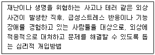
- 심리적 디브리핑
- 심리적 응급처치
- 인지 재구성
- 스트레스 면역훈련
- 지속노출치료
(정답률: 알수없음)
80. 자살 고위험군 학생에 대한 학교 기반 상담 개입 방안으로 옳은 것을 모두 고른 것은?
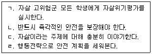
- ㄱ, ㄷ
- ㄴ, ㄹ
- ㄱ, ㄴ, ㄹ
- ㄴ, ㄷ, ㄹ
- ㄱ, ㄴ, ㄷ, ㄹ
(정답률: 알수없음)
81. 다음에서 설명하는 브레머(L. Brammer)의 위기 유형은?
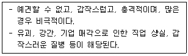
- 발달적 위기
- 상황적 위기
- 실존적 위기
- 환경적 위기
- 체계적 위기
(정답률: 알수없음)
82. 외상 반응에 관한 신경생리학적 설명으로 옳은 것은?
- 외상 자극은 시상을 통해 감각피질, 전두엽 피질로 전달된다.
- 외상 사건에 직면하면 부교감신경계는 활성화되고 교감신경계는 억제된다.
- 외상 사건 정보를 전달받은 시상하부가 교감신경계를 자극하여 투쟁-도피 반응을 유도한다.
- 외상 사건 시 신체에서 느꼈던 떨림, 마비, 멍함, 분노, 슬픔 등은 외현 기억의 형태로 분리되어 편도체에 저장된다.
- 외상 반응 시 분비되는 호르몬은 코르티솔과 옥시토신이다.
(정답률: 알수없음)
83. 위기상담 개입 방안으로 옳지 않은 것은?
- 외상사건 체계와 내담자 간 안전한 물리적 거리를 확보하도록 돕는다.
- 상담 초기에 내담자의 안정화를 도모하기 위하여 필요한 정보를 제공한다.
- 외상 반응을 정상화한다.
- 외현적 기억 처리를 효과적으로 수행하기 위하여 인지기법보다 신체기반 접근법을 활용한다.
- 외상 사건 이전의 자신과 세계관을 회복하도록 돕는다.
(정답률: 알수없음)
84. DSM-5에 분류된 급성스트레스장애(Acute Stress Disorder) 진단 기준으로 옳은 것을 모두 고른 것은?
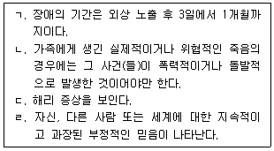
- ㄱ, ㄴ
- ㄷ, ㄹ
- ㄱ, ㄴ, ㄷ
- ㄴ, ㄷ, ㄹ
- ㄱ, ㄴ, ㄷ, ㄹ
(정답률: 알수없음)
85. DSM-5에서 추가 연구가 필요한 진단적 상태로 제안된 '자살 의도가 없는 자해'에 관한 설명으로 옳지 않은 것은?
- 긍정적인 기분 상태를 유도하기 위하여 자해행동을 시도한다.
- 자해행위를 하지 않을 때에도 자해에 대한 생각이 빈번하게 일어난다.
- 개인이 원했던 반응이나 안도감을 자해 행동 도중에 또는 직후에 경험한다.
- 반복적인 자해 행동이 죽음에 이르게 한다는 점을 알고 있다.
- 지난 1년 동안, 5일 이상 신체 표면에 고의적으로 출혈, 상처, 고통을 유발하는 행동을 자신에게 스스로 가한다.
(정답률: 알수없음)
86. 자살 예방을 위한 임상적 평가와 관리에 관한 설명으로 옳은 것은?
- 표준화 자살위험척도를 통하여 내담자의 자살을 예측할 수 있다.
- 자살을 예측할 수 있는 표준적인 위험요인과 보호요인이 존재한다.
- 자기보고용 자살위험척도는 민감도는 낮지만 특이도는 높은 편이다.
- 자살방지 서약서 작성이 내담자의 자살위험성을 낮춘다는 연구 결과가 일관되게 보고되고 있다.
- 표준화 자살위험척도를 통하여 내담자의 자살위험성을 체계적으로 평가할 수 있다.
(정답률: 알수없음)
87. 트라우마 체계 치료의 다섯 단계 중 다음에서 설명하는 단계는?
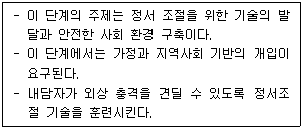
- 생존(surviving) 단계
- 안정(stabilizing) 단계
- 유지(enduring) 단계
- 이해(understanding) 단계
- 극복(transcending) 단계
(정답률: 알수없음)
88. 안구운동 민감소실 및 재처리(EMDR) 기법에 관한 설명으로 옳지 않은 것은?
- 외상 기억을 재처리하도록 도와주는 기법이다.
- 사피로(F. Shapiro)가 8단계의 표준 프로토콜을 개발하였다.
- 이중 주의(dual attention) 자극을 통해 PTSD 증상에 덜 집중하도록 돕는다.
- 정보처리촉진(accelerated information processing)모델에 근거를 두고 있다
- 표준 프로토콜에서는 긍정적 인지 주입 단계가 민감소실 단계보다 선행한다.
(정답률: 알수없음)
89. 재혼 가족에 관한 설명으로 옳지 않은 것은?
- 재혼 부모는 다른 친부모와 자녀 관계의 중요성을 인정해야 한다.
- 재혼 가정은 자녀 양육 시 일반 가정과 다르다는 것을 인식하고 인정해야 한다.
- 재혼 가정의 많은 자녀들은 부모의 새로운 배우자를 자기 가족의 일원으로 포함시키는 것을 힘겨워한다.
- 재혼 부모에 대한 적응 부담은 재혼 당시 자녀의 연령에 따라 다르다.
- 가족 응집력을 높이기 위해 재혼 부모는 가능하면 빨리 부모의 역할을 맡는 것이 좋다.
(정답률: 알수없음)
90. 교육부에서 실시한 2차 학교폭력 실태 조사(2019)에 따른 학교폭력 실태에 관한 설명으로 옳은 것은?
- 가해 이유로는 '상대가 먼저 괴롭혀서' 보다 '장난이나 특별한 이유 없이'가 더 많았다.
- 학교폭력의 중단 이유로는 '학교폭력이 나쁜 것임을 알게 되어서' 보다 '화해하고 친해져서'가 더 많았다.
- 학교폭력 목격 시 '피해학생을 돕거나 주위에 신고한 경우' 보다 '아무 것도 하지 않은 경우'가 더 많았다.
- 학교폭력 피해 유경험 응답률은 중학교, 초등학교, 고등학교 순으로 높았다.
- 피해 유형은 '집단 따돌림'이 가장 많았다.
(정답률: 알수없음)
91. 다음 설명에 해당하는 학교폭력 참여자 유형은?
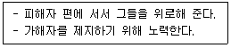
- 가해자
- 방어자
- 동조자
- 방관자
- 강화자
(정답률: 알수없음)
92. 다음에서 설명하는 위기 개입 이론은?
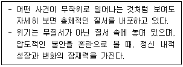
- 정신분석 이론
- 체계 이론
- 적응 이론
- 대인 이론
- 혼돈 이론
(정답률: 알수없음)
93. 학교폭력예방 및 대책에 관한 법률상 학교의 장은 피해학생 및 그 보호자가 심의위원회의 개최를 원하지 아니하는 경미한 학교폭력사건은 일정 요건을 모두 충족하는 경우 자체적으로 해결할 수 있다. 그 요건에 해당하는 것을 모두 고른 것은?
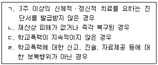
- ㄱ, ㄴ
- ㄴ, ㄷ
- ㄱ, ㄷ, ㄹ
- ㄴ, ㄷ, ㄹ
- ㄱ, ㄴ, ㄷ, ㄹ
(정답률: 알수없음)
94. ( )에 들어갈 내용을 옳게 나열한 것은?
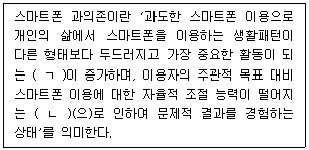
- ㄱ: 현저성, ㄴ: 내성
- ㄱ: 내성, ㄴ: 금단현상
- ㄱ: 민감성, ㄴ: 조절실패
- ㄱ: 현저성, ㄴ: 조절실패
- ㄱ: 중독성, ㄴ: 금단현상
(정답률: 알수없음)
95. 위기의 특성에 관한 설명으로 옳은 것을 모두 고른 것은?
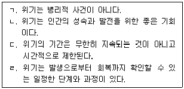
- ㄱ, ㄴ
- ㄴ, ㄷ
- ㄱ, ㄷ, ㄹ
- ㄴ, ㄷ, ㄹ
- ㄱ, ㄴ, ㄷ, ㄹ
(정답률: 알수없음)
96. 위기 상담에서 개방적인 질문보다 폐쇄적인 질문이 더 효과적인 상황을 모두 고른 것은?
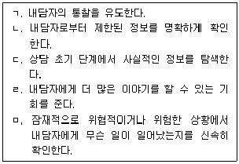
- ㄱ, ㄴ
- ㄷ, ㄹ
- ㄴ, ㄷ, ㅁ
- ㄱ, ㄴ, ㄷ, ㅁ
- ㄱ, ㄴ, ㄷ, ㄹ, ㅁ
(정답률: 알수없음)
97. 위기에 처한 청소년 내담자를 돕기 위한 상담자의 초기 개입행동으로 옳지 않은 것은?
- 내담자에게 필요한 법률적 정보를 제공하였다.
- 한 번 접촉하는데 그치지 않고 계속 접촉을 유지하였다.
- 희망을 갖게 하기 위하여 내담자가 생각하지 못한 다른 가능성을 제시하였다.
- 내담자의 진술을 선택적으로 경청하여 주도적으로 그것을 요약하고 정리할 수 있도록 도와주었다.
- 내담자의 갈등을 이해하고 반응을 인식하기 위해 정신분석 치료를 시작하였다.
(정답률: 알수없음)
98. 부모 이혼 후 자녀에 대한 부모 역할로 옳지 않은 것은?
- 이혼에 대해 자녀가 책임감을 가질 필요가 없음을 이해시킨다.
- 이혼에도 불구하고 자녀를 계속 사랑하고 돌봐줄 것임을 알린다.
- 자녀가 두 부모의 메신저 역할을 해 줄 것을 부탁한다.
- 자녀가 이혼을 반대할지라도 이혼상황을 바꿀 수 없음을 설명한다.
- 이혼으로 인한 자녀의 슬픔, 분노, 혼란된 감정을 수용한다.
(정답률: 알수없음)
99. 허쉬(T. Hirschi)의 사회유대이론에 관한 설명으로 옳지 않은 것은?
- 자신이 애정을 가진 사람에게 폐를 끼치고 싶지 않아서 비행을 저지르지 않게 된다.
- 자신이 원하는 바를 합법적으로 얻기 위해 몰입하면 비행이나 범죄에 저항할 힘이 생긴다.
- 정상적인 청소년보다 비행 청소년과의 접촉시간이 많아지면 자연스럽게 비행과 위법행위를 학습하게 된다.
- 합법적인 활동에 연관된 활동을 열심히 하면 비행을 저지를 시간이 없다.
- 사회의 법규범을 따라야 한다는 굳은 신념은 비행행동을 통제한다.
(정답률: 알수없음)
100. 위기상담에 관한 설명으로 옳지 않은 것은?
- 위기상담은 짧은 시간에 진행되어야 하므로 선택적 경청이 필요하다.
- 내담자가 위기에 관련된 감정을 표현하도록 격려한다.
- 상담자는 스트레스와 위기의 차이를 이해하고 구체적인 상황에 맞추어 대처하도록 도와야 한다.
- 내담자가 위기에 대응하기에 비유동적이라고 평가될 때 상담자는 비지시적 방법을 사용한다.
- 위기상담의 목표는 균형상태의 회복이다.
(정답률: 알수없음)